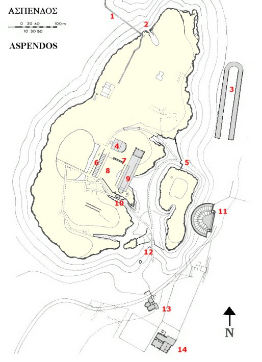

ⓘ
ⓘキョプリュチャイ川（古代のエウリュメドン川）沿いのアスペンドスには、古代世界で最も保存状態の良い劇場のひとつがあります。紀元2世紀、マルクス・アウレリウス帝の時代に建築家ゼノンが建てたもので、舞台建物はほぼ完全に残り、約1万5千席の音響は今も人々を驚かせます。セルジューク朝の時代には一時期隊商宿として使われ、現在はアスペンドス・オペラ・バレエ・フェスティバルなどの催しが開かれます。背後の丘のバシリカとアゴラ、平野を横切る水道橋が、かつての街の大きさを物語ります。
⏳ 時間旅行
| 当時 | 今日 |
|---|---|
| 海から約16km内陸。古代にはエウリュメドン川（キョプリュ川）を船で街まで上れた。塩・油・羊毛の交易 | 川で海とつながる内陸港 |
| 劇場：西暦161〜180年、街出身の建築家ゼノンが建設。約7000〜8000席 | 今も毎夏コンサートやオペラ、バレエの舞台 |
| 古代世界でもっとも保存状態のよい劇場。舞台建物が今も立つ | 壁がそのまま残る野外コンサートホール |
| 水道橋：全長約19km。最後の区間は圧力式の逆サイフォンで、2基の給水塔は今も高さ30m近い | 都市の上水道網と給水塔 |
| セルジューク朝は劇場を隊商宿として使い、13世紀には舞台建物を宮殿に改装 | 古い建物が新しい役目で生き続ける例 |
| エウリュメドン橋：ローマ時代の橋の基礎の上にセルジューク朝が再建 | 何百年も同じ場所にある渡り |
🎧 アスペンドスの一日
西暦175年。朝、あなたの小舟は海から河口に入り、エウリュメドン川をさかのぼります。岸では貨物船が塩やオリーブ油、羊毛を積み込んでいます。
街に着くと、平野をまたぐアーチの列が見えます。山からの水は2本の高い塔のあいだを圧力で上り、街へ配られています。
午後、完成したばかりの劇場に入ります。大理石の座席はまだ輝き、入口の上の碑文には建築家ゼノンの名が刻まれています。7000人の観客とともに開演を待ちます。
今もこの劇場は、完成した日とほとんど変わらない姿で立っています。夏の夜には再び満員になります。今度はオペラやバレエ、コンサートのために。
数値は推定で、資料によって異なります。図は説明用で、縮尺どおりではありません。
遺跡平面図

平面図: Dr. Wessmann Wessmann.clp · Public domain · Wikimedia Commons
よくある質問
アスペンドスはどこにありますか？
アスペンドスはSerik, アンタルヤ（地中海地方）にあります。行き方はこのページの地図または経路ボタンをご利用ください。
アスペンドスの見学にはどのくらい時間がかかりますか？
平均見学時間：1.5〜3時間。
アスペンドスでミュージアムパスは使えますか？
文化観光省が管理する博物館・遺跡で通常利用できます.
アスペンドスはどの時代のものですか？
アスペンドスはローマの時代のものです。
アスペンドスの近くには他に何がありますか？
近くの文化スポット：キョプリュパザル（アスペンドス）橋 (~3 km), シッリオン古代都市 (~17 km), エテンナ古代都市 (~26 km)。
アスペンドスに音声ガイドはありますか？
はい。このページの「聴く」ボタンで、日本語を含む8か国語で紹介を聴くことができます。
♿ バリアフリー情報
この場所の確認済みバリアフリー情報はまだありません。来訪者や博物館から情報を集め、確認後にここに掲載します。
文化観光省が管理する博物館と遺跡では、障害のある方と付き添いの方1名は、証明書を提示すると無料で入場できます。訪問前に最新の条件をご確認ください。 バリアフリーガイド →
♿ バリアフリー情報を送る
💬 訪問者のメモと質問
ここを訪れたことがありますか？ほかの訪問者へのヒントを残したり、質問したりできます。メモはチームの確認後に公開されます。
✍️ メモや質問を書く
関連ガイド
写真
周辺の宿泊施設とレストラン
あなたのお店をここに掲載しませんか？ 広告掲載